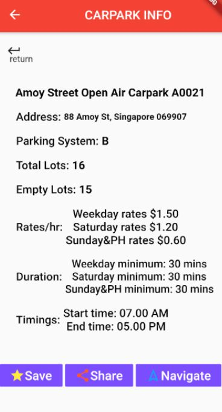

Some of my Past Projects :)

Dungeon Learners
CZ3003 - Software Systems Analysis and Design
Dungeon Learners is a game which allows students to learn different subjects. The idea of this game is somewhat similar to Pokemon, however, the attacks are based on how knowledgeable the students are to the different subjects and will be used as attacks. This application is developed using Unity and C#.

CarparkLey
CZ2006 - Software Engineering project
CarparkLEY is an application which allows drivers to check available lots near a destination in real-time. Drivers can check empty, lots, and detailed price rates of the carpark. This application is developed using flutter. Requirement elicitation, dynamic and analysis models are in the Software Requirement Specifications(SRS).